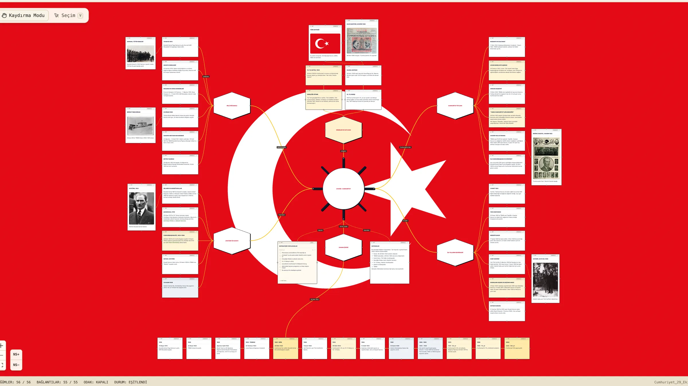

29 Ekim Cumhuriyet Panosu

Cumhuriyet'e giden yolu, Atatürk'ün kısa hayatını, ilk devrimleri, simgeleri ve 1919'dan 2023'e uzanan zaman çizgisini tek bir panoda toplayan bu dosyayı indirin ve Note Note'ta gezin. Her düğümü açıp okuyabilir, notlar arasında bağlantıları izleyebilir, kendi notlarınızı ekleyebilirsiniz.
Panoyu indir (Cumhuriyet_29_Ekim.nnn)Note Note panosu · yaklaşık 1,6 MBNasıl açılır?
- Note Note'u Mac App Store'dan indirin (kısa süreliğine ücretsiz).
- Yukarıdaki düğmeyle dosyayı indirin.
- Çift tıklayın ya da Note Note'ta İçe Aktar ile dosyayı seçin.
Pano neler içeriyor?
- Millî Mücadele: 19 Mayıs 1919'dan Büyük Taarruz'a ana duraklar.
- Cumhuriyet'in İlanı: Mudanya, Lozan, Ankara'nın başkent olması ve 29 Ekim 1923.
- Atatürk'ün Hayatı: kısa ve olgusal bir özet.
- İlk Yılların Devrimleri: eğitim, hukuk, harf, kadın hakları, soyadı.
- Simgeler ve Kutlama: Gençliğe Hitabe, 10. Yıl, Ulusal Bayram, bayrak.
- Zaman Çizgisi: 1919'dan 2023'e tarih sırasıyla 13 durak.
- Bir yapılacaklar listesi ve bir kaynak listesi.
Görsel kaynakları
Panodaki tüm görseller Wikimedia Commons'ta kamu malı olarak işaretli eserlerdir. Yalnızca yeniden boyutlandırılmıştır, başka bir değişiklik yapılmamıştır.
| Görsel | Yapımcı / kaynak | Lisans |
|---|---|---|
| Atatürk, 1923 | Bilinmeyen fotoğrafçı | Kamu malı (PD-old) |
| Resimli Gazete, 3 Kasım 1923 | Resimli Gazete; İBB Atatürk Kitaplığı Sayısal Arşiv | Kamu malı (PD-Turkey) |
| Birinci TBMM Binası, Ankara | Bain News Service, Library of Congress (George Grantham Bain Collection) | Bilinen yayın kısıtı yok (Library of Congress) |
| Yeni harfler, Kayseri, 20 Eylül 1928 | T.C. Cumhurbaşkanlığı arşivi | Kamu malı (PD-TR) |
| Samsun Tütün İskelesi | Bilinmeyen fotoğrafçı; Samsun Yerel Tarih Grubu | Kamu malı (PD-Turkey) |
| Ulus gazetesi, 28 Ekim 1946 | Ulus Gazetesi; İBB Atatürk Kütüphanesi | Kamu malı (PD-Turkey) |
| Türk Bayrağı | David Benbennick (özgün çizim); Türk Bayrağı Kanunu (2893) ile tanımlı | Kamu malı |


Kaynaklar
- Nutuk'tan: 28–29 Ekim 1923 anlatımı (bianet)
- TBMM tutanakları: 29 Ekim 1923 oturumu (Habertürk)
- İnönü, Mustafa İsmet, TDV İslâm Ansiklopedisi
- Gençliğe Hitabe metni
- 10. Yıl Marşı, Atatürk Ansiklopedisi
- Atatürk Ansiklopedisi · TBMM
- 2429 sayılı Ulusal Bayram ve Genel Tatiller Hakkında Kanun
- 2525 sayılı Soyadı Kanunu
- Lozan Antlaşması · Atatürk'ün devrimleri · “Ne mutlu Türküm diyene” (Vikipedi, yönlendirme amaçlı)
10. Yıl Marşı'nın sözleri telif hakkı nedeniyle panoda yer almaz; yalnızca söz ve beste sahipleri anılır. Pano, Atatürk'ün anısına saygıyla ve yalnızca doğrulanabilir bilgilerle hazırlanmıştır.
Note Note hiçbir veri toplamaz. Bu sayfa da çerez ya da izleyici kullanmaz. Gizlilik Politikası · Destek